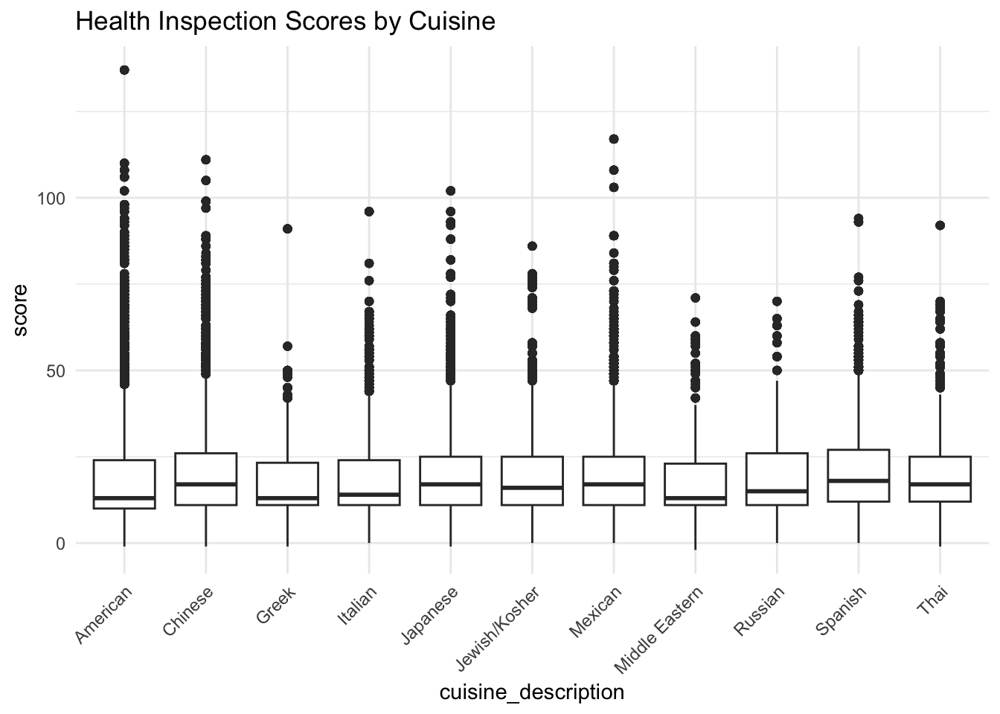

plotly
Click [here] (index.html) to return to the index page! We’re gonna look at the Instacart data.
library(flexdashboard)
library(p8105.datasets)
data("rest_inspec")
library(tidyverse)## ── Attaching core tidyverse packages ──────────────────────── tidyverse 2.0.0 ──
## ✔ dplyr 1.1.3 ✔ readr 2.1.4
## ✔ forcats 1.0.0 ✔ stringr 1.5.0
## ✔ ggplot2 3.4.3 ✔ tibble 3.2.1
## ✔ lubridate 1.9.2 ✔ tidyr 1.3.0
## ✔ purrr 1.0.2
## ── Conflicts ────────────────────────────────────────── tidyverse_conflicts() ──
## ✖ dplyr::filter() masks stats::filter()
## ✖ dplyr::lag() masks stats::lag()
## ℹ Use the conflicted package (<http://conflicted.r-lib.org/>) to force all conflicts to become errorslibrary(ggplot2)data("rest_inspec")rest_inspec <- rest_inspec %>%
filter(!is.na(score) &
boro %in% c("Manhattan", "BRONX", "BROOKLYN") &
cuisine_description %in% c("Mexican", "Chinese", "Japanese", "Italian", "Jewish/Kosher", "Russian", "American", "Middle Eastern", "Spanish", "Greek", "Thai")) %>%
select(boro,cuisine_description, dba, critical_flag, score, grade)print(rest_inspec)## # A tibble: 64,594 × 6
## boro cuisine_description dba critical_flag score grade
## <chr> <chr> <chr> <chr> <int> <chr>
## 1 BRONX Chinese NEW LIN'S GARDEN NY Critical 22 <NA>
## 2 BRONX Chinese KIM HUA Not Critical 9 A
## 3 BRONX American SYMPHONY DINER Not Critical 22 <NA>
## 4 BRONX Mexican LOS HERMANOS SALAZAR RES… Critical 6 A
## 5 BRONX American GLACKEN'S BAR Not Critical 23 <NA>
## 6 BRONX American NEW YORK YANKEES MVP CLUB Not Applicab… 0 A
## 7 BRONX American HIGHLANDERS (STAND 318) Critical 7 A
## 8 BRONX American STADIUM PIZZA BAR RESTAU… Not Applicab… 0 A
## 9 BRONX American YANKEE TAVERN Not Critical 13 A
## 10 BRONX American NATHAN'S (STAND 312) Not Critical 10 A
## # ℹ 64,584 more rowsThe rest_inspec dataset contains 64594 observations and
6 variables.
We only want to look at restaurants located in the boroughs of “Manhattan”, “BRONX”, and “BROOKLYN”. Cuisine Filter: The dataset was filtered to include only specific cuisine types: “Mexican”, “Chinese”, “Japanese”, “Italian”, “Jewish/Kosher”, “Russian”, “American”, “Middle Eastern”, “Spanish”, “Greek”, and “Thai”. Only relevant columns were retained for analysis: cuisine_description, dba, critical_flag, score, and grade.
Which cuisine types are most common in each borough?
ggplot(rest_inspec, aes(fill=cuisine_description, y=..count.., x=boro)) +
geom_bar(position="stack") +
labs(title="Cuisine Distribution by Borough") +
theme_minimal()## Warning: The dot-dot notation (`..count..`) was deprecated in ggplot2 3.4.0.
## ℹ Please use `after_stat(count)` instead.
## This warning is displayed once every 8 hours.
## Call `lifecycle::last_lifecycle_warnings()` to see where this warning was
## generated.
How does the average health inspection score differ among the various cuisines?
ggplot(rest_inspec, aes(x=cuisine_description, y=score)) +
geom_boxplot() +
labs(title="Health Inspection Scores by Cuisine") +
theme_minimal() +
theme(axis.text.x=element_text(angle=45, hjust=1))
What’s the distribution of grades across the different boroughs?
ggplot(rest_inspec, aes(x=grade)) +
geom_bar() +
facet_wrap(~boro) +
labs(title="Distribution of Grades by Borough") +
theme_minimal()